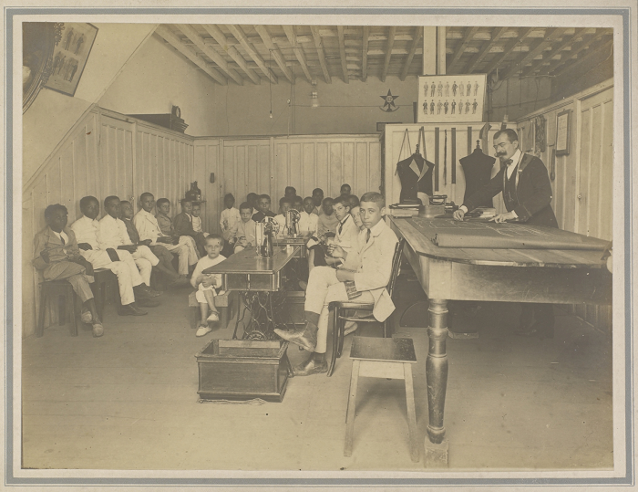
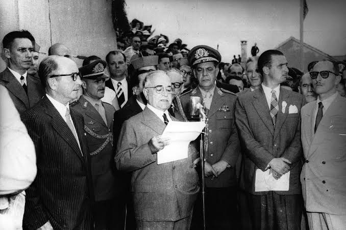
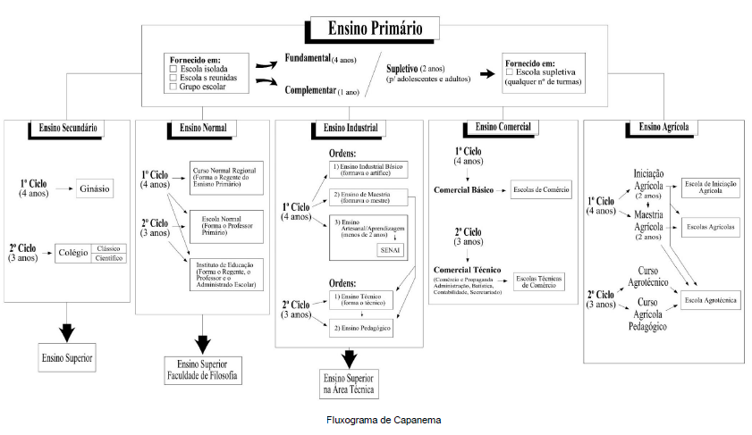
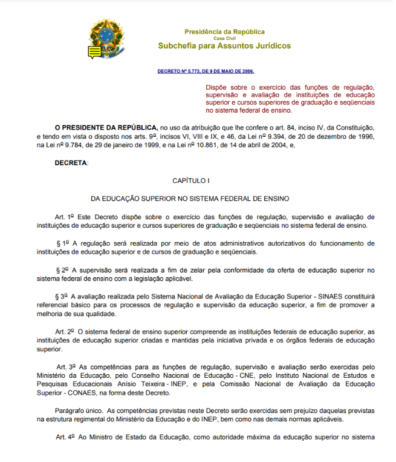
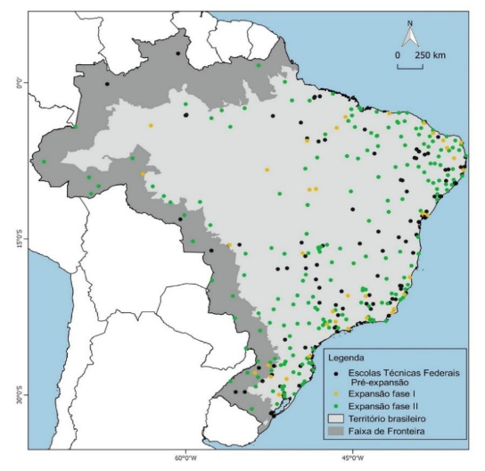
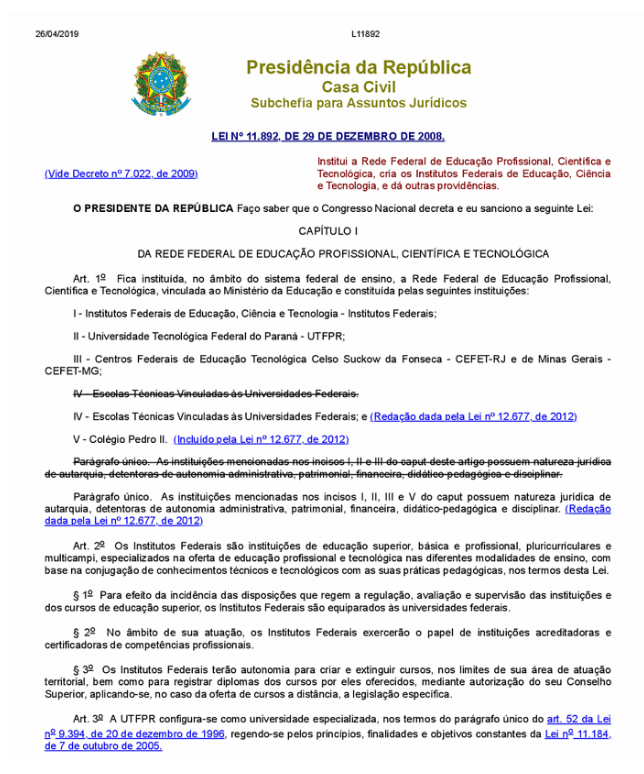

1909 - Criação das Escolas de Aprendizes Artífices

Em 1909, o presidente Nilo Peçanha assinou o Decreto nº 7.566, instituindo as “Escolas de Aprendizes Artífices”.
Essas escolas foram criadas para oferecer ensino profissional, inicialmente voltado para jovens desfavorecidos,
com foco em atividades manuais e industriais. A criação dessas escolas foi um passo importante na política de
industrialização do Brasil, buscando preparar mão de obra qualificada para o mercado emergente e desenvolver uma
classe trabalhadora capacitada.
1927 - Ensino Profissional Obrigatório
O Congresso Nacional aprovou o Projeto de Fidélis Reis, que estabelecia o ensino profissional obrigatório.
Essa iniciativa refletiu a crescente valorização da educação técnica como meio de promover o desenvolvimento
econômico. A obrigatoriedade do ensino profissional tornou-se uma estratégia para impulsionar a indústria
nacional, além de alinhar-se aos modelos de educação profissional em países como a Alemanha.
1930 - Ministério da Educação e Saúde Pública
A criação do Ministério da Educação e Saúde Pública marcou uma reorganização no sistema educacional brasileiro.
A supervisão das Escolas de Aprendizes e Artífices foi transferida para o novo ministério, destacando a
importância do ensino técnico no país. Esse período também coincidiu com o início da Era Vargas, que promoveu
diversas reformas educacionais e industriais, com o intuito de modernizar o Brasil.
1937 - Constituição de 1937 e Transformação em Liceus Industriais

A Constituição de 1937 incluiu, pela primeira vez, o ensino técnico, profissional e
industrial como áreas específicas. A Lei nº 378 transformou as Escolas de Aprendizes e
Artífices em Liceus Industriais, que passaram a oferecer um ensino profissional abrangente.
Essa transformação visava aumentar a capacidade do país de formar profissionais especializados para
diferentes setores, especialmente com a intensificação do processo de industrialização.
1941 - Reforma Capanema

Vigora uma série de leis, conhecidas como a “Reforma
Capanema”, que remodelam todo o ensino no país.
Os principais pontos:
- O ensino profissional passa a ser considerado de nível médio;
- O ingresso nas escolas industriais passa a depender de exames de admissão;
- Os cursos são divididos em dois níveis:
- Curso básico industrial, artesanal, de aprendizagem e de mestria;
- Curso técnico industrial.
1942 - Liceus Industriais e Escolas Técnicas
O Decreto nº 4.127 transformou os Liceus Industriais em Escolas Industriais e Técnicas,
com equivalência ao ensino secundário. Isso consolidou o status das escolas técnicas e
ampliou seu alcance. O desenvolvimento das escolas técnicas refletiu a necessidade de
profissionais com formação prática em diversas áreas industriais.
1944 - FEB na Segunda Guerra
Em 1944, a participação da Força Expedicionária Brasileira (FEB) na Segunda Guerra Mundial e o empréstimo financeiro dos Estados Unidos ao Brasil durante o governo de Getúlio Vargas foram fatores fundamentais para impulsionar a industrialização brasileira. A FEB lutou ao lado dos Aliados, o que elevou a imagem do Brasil no cenário internacional.
O empréstimo dos EUA permitiu que o Brasil investisse em sua infraestrutura e modernizasse sua indústria, criando e expandindo várias fábricas para atender à demanda da guerra. Isso resultou em um aumento da capacidade produtiva e inovações tecnológicas.
Após a guerra, o Brasil entrou em um período de crescimento econômico, conhecido como "Milagre Econômico", onde a industrialização se intensificou, moldando a trajetória do país nas décadas seguintes. Assim, a participação na guerra e o apoio financeiro dos EUA foram cruciais para o desenvolvimento econômico e social do Brasil.
1956/1961 - Governo do JK
Entre 1956 e 1961, o governo de Juscelino Kubitschek (JK) promoveu uma forte integração entre o Estado e a economia, com foco na industrialização e no desenvolvimento do país. Seu famoso plano, "50 anos em 5", visava acelerar o crescimento em diversas áreas, como infraestrutura, energia e transportes.
Nesse contexto, houve um esforço para formar profissionais capacitados para atender às demandas da nova economia industrial. Foram criadas e ampliadas instituições de ensino técnico e profissionalizante, preparando trabalhadores para setores estratégicos, como construção civil, siderurgia e automobilística, fundamentais para as metas de modernização.
Assim, a educação profissional se consolidou como uma peça-chave para acompanhar o rápido desenvolvimento impulsionado pelo governo de JK.
1959 - Escolas Técnicas Federais
Em 1959, as Escolas Industriais e Técnicas passaram a ser autarquias e adotaram o nome de Escolas Técnicas Federais. Essa mudança lhes garantiu autonomia didática e de gestão, permitindo maior liberdade na organização dos currículos e na administração de seus recursos.
Com essa transformação, essas instituições se tornaram mais eficientes na formação de profissionais qualificados, alinhando o ensino técnico às necessidades econômicas e industriais do Brasil, que vivia um período de rápida modernização e crescimento.
1961 - Lei 4.024
Em 1961, a promulgação da Lei 4.024, que estabeleceu as Diretrizes e Bases da Educação Nacional (LDB), representou um marco na educação brasileira. Essa lei trouxe uma importante inovação ao equiparar o ensino profissional ao ensino acadêmico, reconhecendo o valor da formação técnica e profissionalizante como equivalente ao ensino regular.
Contexto e Impactos:
Valorização da Educação Profissional
Com a nova legislação, cursos técnicos e profissionalizantes passaram a ter o mesmo status dos cursos acadêmicos tradicionais, permitindo que alunos do ensino técnico tivessem acesso a oportunidades educacionais e profissionais em condições semelhantes às dos alunos do ensino médio regular.
Flexibilização e Expansão do Currículo
A LDB de 1961 deu autonomia às escolas para adaptar seus currículos às necessidades do mercado de trabalho e das indústrias regionais, promovendo uma formação mais prática e orientada às demandas econômicas do país.
Mudanças na Política Educacional
O período foi marcado por uma maior aproximação entre educação e desenvolvimento econômico. As Escolas Técnicas Federais e outras instituições começaram a formar profissionais para áreas estratégicas como a indústria, comércio e agricultura, fortalecendo o processo de industrialização em andamento no Brasil.
1967 - Decreto 60.731
Em 1967, o Decreto 60.731 determinou a transferência das Fazendas Modelos do Ministério da Agricultura para o Ministério da Educação e Cultura (MEC), convertendo-as em escolas agrícolas. Essa mudança faz parte de um esforço para ampliar e fortalecer a educação profissional rural, alinhando o ensino às demandas do setor agrícola.
Contexto e Impactos:
Fortalecimento da Educação Agrícola:
A medida buscava integrar as atividades educacionais às práticas produtivas, promovendo uma formação técnica voltada para a agricultura e a gestão rural.
Atendimento às Demandas do Setor Agrícola
As escolas agrícolas passaram a formar profissionais qualificados para modernizar a produção rural e atender à crescente mecanização e inovação no campo.
Integração entre Educação e Economia Rural:
A transferência das Fazendas Modelos garantiu a união entre ensino técnico e prática agrícola, fornecendo um espaço de aprendizado prático para os estudantes.
Integração entre Educação e Economia Rural:
A formação de trabalhadores especializados foi essencial para apoiar a modernização do setor agropecuário, que era estratégico para o crescimento econômico do Brasil na época.
1971 - Formação Técnica Obrigatória
A Lei de Diretrizes e Bases da Educação Brasileira torna
técnico-profissional todo currículo do segundo grau compulsoriamente.
Um novo paradigma se estabelece: formar técnicos sob o regime da
urgência.
1978 - Criação dos CEFETs
A Lei 6545 transforma três Escolas Técnicas Federais (Paraná, Minas
Gerais e Rio de Janeiro) em Centros Federais de Educação Tecnológica.
1980 - 1990 - Impacto da Globalização na Educação
A globalização, nova configuração da economia mundial, também atinge o
Brasil. O cenário é de profundas e polêmicas mudanças: a
intensificação da aplicação da tecnologia se associa a uma nova
configuração dos processos de produção.
1994 - Instituição do Sistema Nacional de Educação Tecnológica
A Lei 8.948, de 8 de dezembro:
institui o Sistema Nacional de
Educação Tecnológica, transformando, gradativamente, as ETFs e as EAFs
em CEFETs;
A expansão da oferta da educação profissional somente
ocorrerá em parceria com Estados, Municípios e Distrito Federal, setor
produtivo ou organizações não governamentais, que serão responsáveis
pela manutenção e gestão dos novos estabelecimentos de ensino.
1996 - Educação Profissional na LDB
Em 20 de novembro, a Lei 9.394 (Lei de Diretrizes e Bases da
Educação Nacional/LDB) dispõe sobre a Educação Profissional
num capítulo próprio.
1997
O Decreto 2.208 regulamenta a educação profissional e cria o Programa de Expansão da Educação Profissional (Proep), marcando um passo importante na estruturação e organização da educação profissional no Brasil.
1999
Retoma-se o processo de transformação das Escolas Técnicas Federais em Centros Federais de Educação Tecnológica (Cefets), com o objetivo de expandir a oferta de cursos técnicos e aproximar a formação profissional das demandas do mercado de trabalho.
2004
O Decreto 5.154 permite a integração do ensino técnico de nível médio ao ensino médio, criando possibilidades de formação integrada e aprimorando a capacitação dos estudantes para o mercado de trabalho logo após o ensino médio.
2005
- A Lei 11.195 institui que a expansão da oferta da educação profissional preferencialmente ocorrerá em parceria com Estados, Municípios, Distrito Federal, setor produtivo e organizações não governamentais. Essa lei incentiva uma participação colaborativa na educação profissional.
- É lançada a primeira fase do Plano de Expansão da Rede Federal, com a construção de 60 novas unidades de ensino pelo Governo Federal, ampliando significativamente a oferta de cursos técnicos e profissionalizantes.
- O Cefet Paraná é transformado em Universidade Tecnológica Federal do Paraná, marcando uma nova fase de desenvolvimento para a instituição e expandindo sua missão educacional.
2006 - Decreto 5.773

Estabeleceu normas para regulação e avaliação das instituições e cursos
superiores no sistema federal.
Proeja:Programa de integração da educação profissional
com jovens e adultos, para atender quem não concluiu os estudos em idade
regular.
Catálogo dos Cursos Superiores de Tecnologia:Criado
para padronizar e organizar os cursos técnicos.
2007 - Segunda fase do plano de expansão

Iniciada a segunda fase, com meta de 354 unidades até 2010.
Programa Brasil profissionalizado: Incentivo ao ensino
técnico-profissionalizante integrado ao ensino médio nas redes
estaduais.
Catálogo dos Cursos Técnicos: Lançado para padronizar e
melhorar a qualidade dos cursos técnicos.
2008 - Articulação para criação dos Institutos Federais

Houve um movimento para reorganizar a Rede Federal, com a criação dos
Institutos Federais, que reuniram as escolas técnicas e agiriam com
maior autonomia para oferecer educação profissional e tecnológica em
todos os níveis, do médio ao superior.
2009 - Centenário da Rede Federal
Comemoração dos 100 anos da criação da Rede Federal, que teve origem em
1909 com a criação das primeiras escolas de aprendizagem, voltadas para
o ensino profissional.
2024 - A Expansão dos Institutos Federais
A Rede Federal conta com 685 unidades em todo o Brasil, abrangendo 38
Institutos Federais, 2 Centros Federais de Educação Tecnológica
(Cefets), a Universidade Tecnológica Federal do Paraná (UTFPR), 22
escolas técnicas vinculadas a universidades federais e o Colégio Pedro
II.
O Governo Federal anunciou, no dia 12 de março, a criação de 100 novos
campi dos Institutos Federais de Educação, Ciência e Tecnologia(IFs). A
iniciativa alcançará todas as unidades da Federação, gerando 140 mil
novas vagas, majoritariamente de cursos técnicos integrados ao ensino
médio.